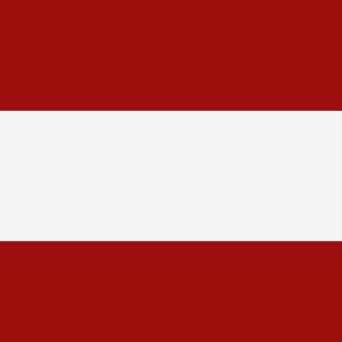

 
El Club Estudiantes de La Plata se transformó en el primer “Club Donante” de la provincia de Buenos Aires, tras la firma de un convenio con el Instituto de Hemoterapia “Dra. Nora Etchenique” y el Cucaiba, informó el Ministerio de Salud bonaerense. El acuerdo fue rubricado por la directora ejecutiva del Instituto de Hemoterapia, Laura González; el presidente del Centro Único Coordinador de Ablación e Implante de la provincia de Buenos Aires (Cucaiba), Francisco Leone, y el presidente y vice de la entidad deportiva Martín Gorostegui y Juan Sebastián Verón, respectivamente. De este modo, se comenzó a implementar la estrategia de promoción y difusión de la donación de sangre, órganos y tejidos en instituciones deportivas del mismo modo que se lleva adelante esta planificación con los “Municipios Donantes”. Durante la firma del convenio, González destacó que “durante la época más crítica de la pandemia donde los donantes no concurran a donar a los hospitales por el Covid, los clubes fueron uno de los tantos lugares que nos abrieron sus puertas para hacer las colectas de sangre”, y pidió que “este sea el puntapié para sumar muchos clubes donantes”. Por su parte, Leone resaltó que “la inclusión de los distintos actores sociales en la promoción de la donación es un trabajo que empezamos con nuestra querida Nora Etchenique y hoy lo continuamos con Laura González, por lo cual les agradecemos al club y a la Fundación por el espacio que nos dan”. Finalmente, Gorostegui contó que él mismo fue trasplantado renal. “Estoy muy al tanto de lo que se vive en este tipo de situaciones por lo cual sepan que pueden contar siempre con Estudiantes”, afirmó. “El Pincha” realiza dos colectas de sangre por año tanto en su sede social como en el Estadio UNO, y la última fue el pasado 28 de mayo cuando se acercaron 44 personas, una jornada que contó con la participación de la Fundación Estudiantes y el grupo “Pinchas hasta la Médula”. La Plata es una ciudad referente por la donación de sangre ya que cuenta con uno de los Centros Regionales de Hemoterapia más importantes del país.
03/06/2022 Juan Perez